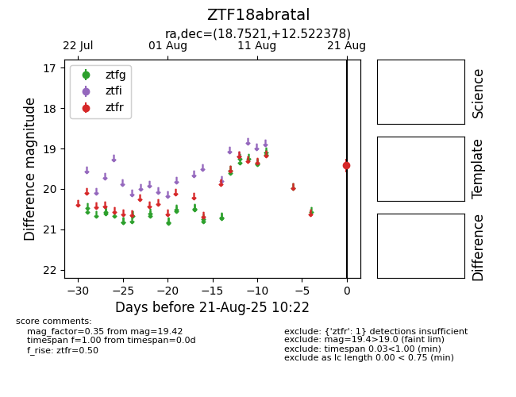

Target ZTF18abratal at 2025-08-21 10:22, see:
FINK: fink-portal.org/ZTF18abratal
Lasair: lasair-ztf.lsst.ac.uk/objects/ZTF18abratal
ALeRCE: alerce.online/object/ZTF18abratal
alt names
ZTF18abratal (ztf,alerce)
coordinates:
equatorial (ra, dec) = (18.7521,+12.52238)
galactic (l, b) = (131.8905,-49.93893)
photometry
last ztfr=19.42
1 ztfr detections
